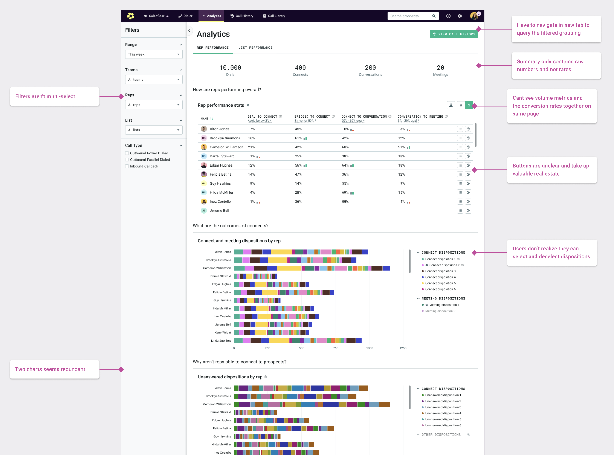
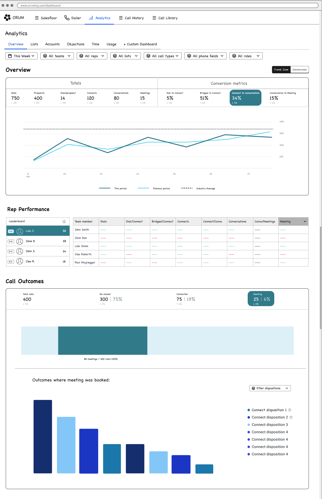
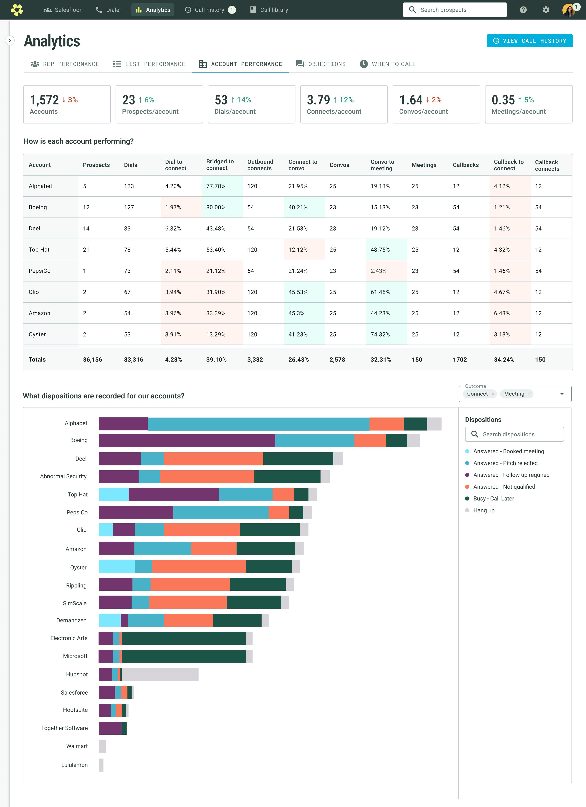
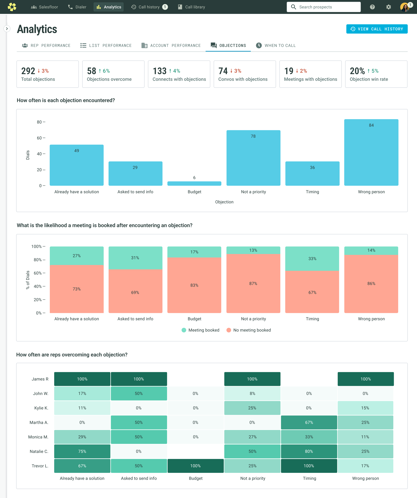
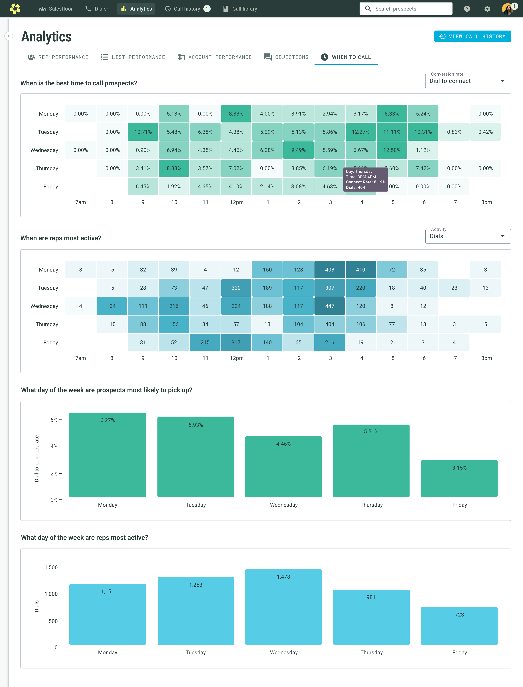
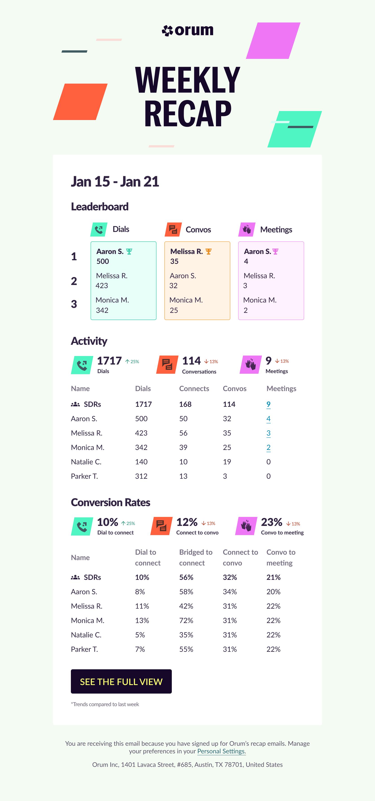
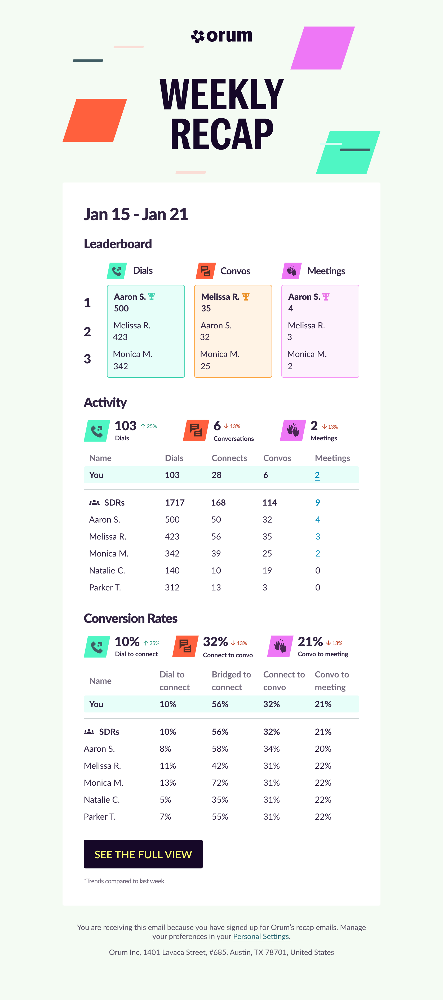
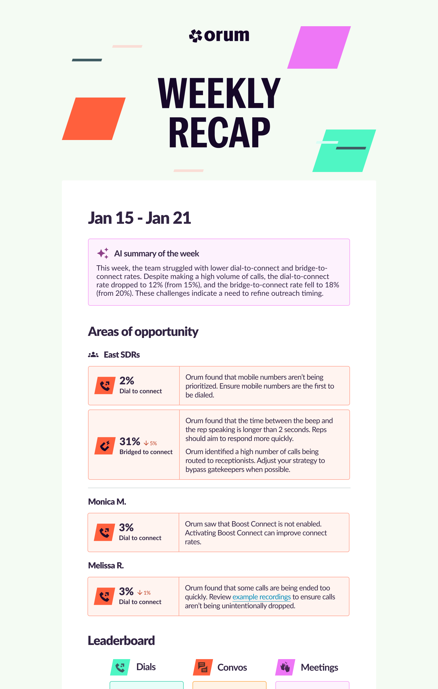

The challenge
Managers rely on analytics to assess their teams, identify problems, and coach reps more effectively. But the existing experience was sparse, hard to scan, and not giving customers the level of visibility they needed. It was also becoming a real business problem: customers were explicitly citing analytics when comparing Orum to competitors.
Give sales teams the data they need to assess performance, identify what needs attention, and improve their dialing strategy.
Reduce churn risk and make analytics a stronger reason to stay with Orum.
Understanding what managers actually needed
Coaching and the SDR manager persona were a newer focus for our team, so I conducted a broader research project and interviewed a dozen SDR managers to understand their role and how they coached their teams.
Three responsibilities came up consistently:
One of the most critical parts of an SDR manager’s role is analyzing performance data to find where the team can improve.
The research also showed that users sat on a spectrum. Some managers cared mostly about top-line KPIs, while others wanted to investigate every detail. Reps ranged from brand new to highly experienced. The analytics experience needed to work across both spectrums without overwhelming people who wanted a simpler view.
Manager
Manager
Rep
Performing Rep
Key product decisions
The difficult part of this project wasn’t simply adding more charts. It was deciding which questions the product needed to answer, what information deserved prominence, and how much depth to expose at once.
Design for both KPI-focused users and data-heavy users. Headline metrics needed to be immediately understandable, while deeper analysis remained available for people who wanted it.
Prioritize the highest-value analytics questions first. Based on research, customer demand, technical feasibility, and competitive pressure, we focused on trends, a conversion funnel, account performance, objections, and when-to-call insights.
Avoid one overloaded dashboard. Separate the experience around distinct questions so people could quickly understand where to go depending on what they were trying to diagnose.
What needed to change
The existing analytics experience also had several usability problems. Important information was hard to scan, controls and filters were limited, and some interactions added unnecessary work.

Working through the information
I spent more time than usual in low- and mid-fidelity design because much of the work was deciding what information belonged where, how to group it, and which visualization made the data easiest to understand.
I iterated on different approaches while working closely with engineering to understand what was technically feasible.

The redesigned analytics system
How is my team performing?
Rep Performance became the main entry point. I surfaced overall conversion rates at the top, removed the need to toggle the performance table, and added a conversion funnel and trend graph so teams could understand both current performance and change over time.
Which accounts are working?
Account Performance gave teams a way to understand which accounts were driving results and which might need a different strategy.

Why are prospects saying no?
The Objections dashboard made objection patterns visible, helping managers identify common blockers and coaching opportunities.

When should we call?
The When to Call view helped teams compare when reps were dialing against when prospects were most likely to pick up.

Rollout and impact
We rolled the redesign out over several weeks, and I interviewed another dozen customers to understand their early reactions. Feedback was overwhelmingly positive, and smaller issues were captured as follow-up improvements.
After launch, daily usage increased 18%, average session time increased from 22 to 30 minutes, and the redesign helped retain four major accounts that had been at risk of churn.
Taking analytics beyond the dashboard
Research also showed that managers were spending considerable time manually creating performance summaries for their teams. We saw an opportunity to save them time by extending analytics into weekly recap emails.
I leaned into the competitive nature of sales teams with a leaderboard and a more playful visual treatment. Managers received a team view, while reps received a version focused on their own performance.


Where I wanted to take it next
A natural next step was using AI to turn the data into actionable recommendations to help users understand not only what was happening, but what they could do differently based on the patterns we were seeing.
